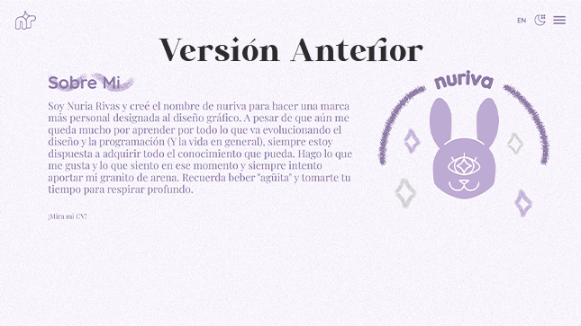
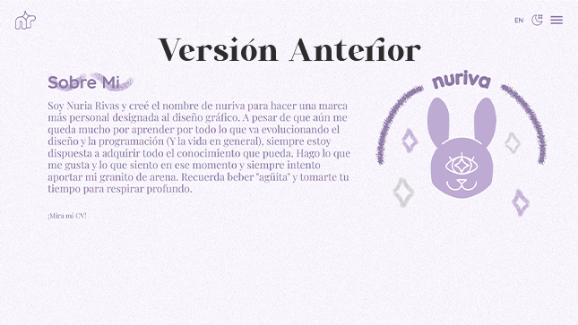

Research
Mirando las versiones antiguas del portfolio y buscando referencias de otros proyectos para estructuras para ideas nuevas. Pensando en lo que se quiere lograr.
Idea
Con la información obtenida, llegó el brainstorming. Información clara, elección de proyectos, poder subir imágenes y poner links.
Una web portfolio fácil de manejar y con un diseño atractivo.
Lenguaje Visual
Tiene un estilo moderno tirando a lo profesional, un equilibrio entre la personalidad y lo serio. Colores que combinan, tipografías legibles, transmitiendo un buen rollo.
Conclusiones
Nuria Rivas es una web portfolio en continuo cambio puesto que como su nombre indica, refleja los proyectos y personalidad deseada para atraer a las empresas.
Es una tarea difícil puesto que se requiere estar actualizada, subiendo nuevos proyectos, e incluso el gusto personal irá cambiando pero el resultado es satisfactorio.

 
